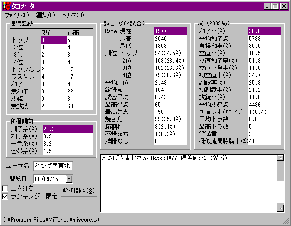
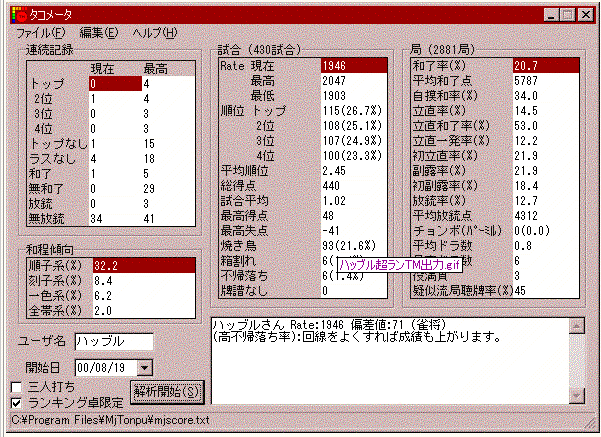
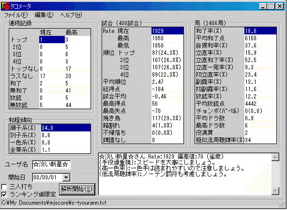
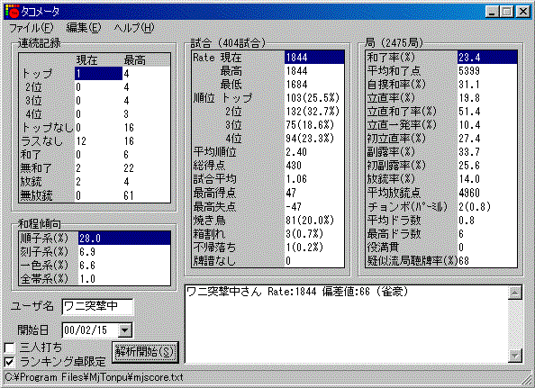
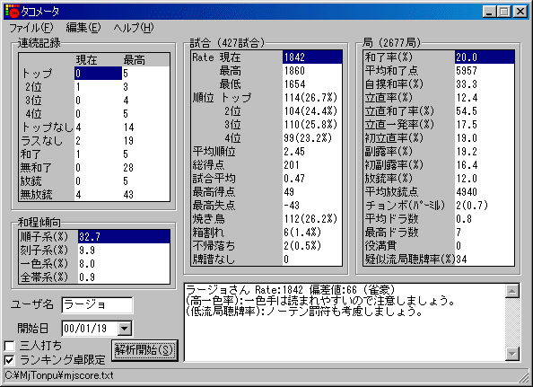
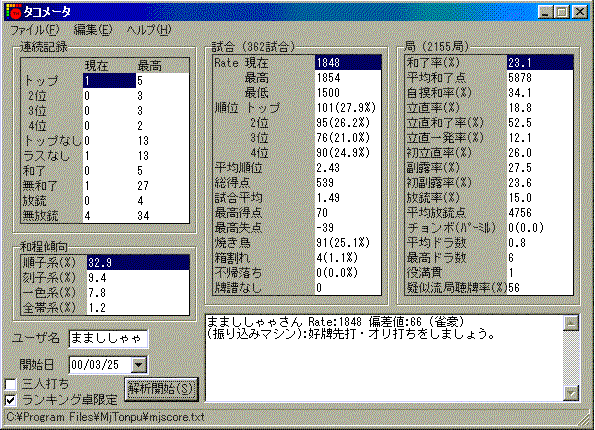
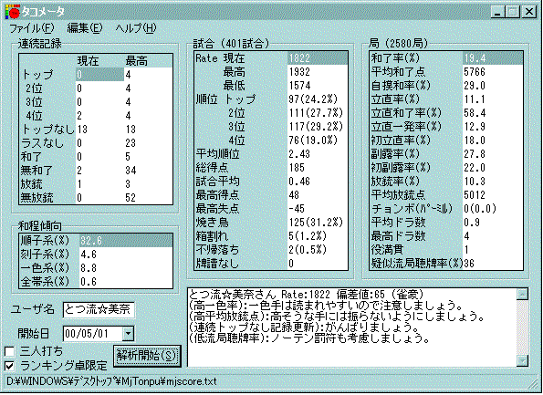
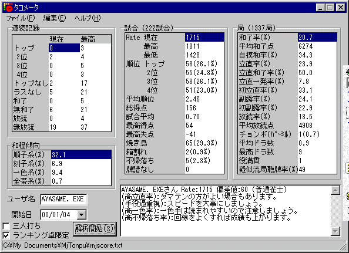

１０／２４付
今後増えれば、また追加していきます。重くてごめんなさい。
タコメータというすばらしいツールを作って下さったさっぱり★さんに感謝( ´ｰ`)
（安定するＲ）は、集計期間中の平均順位・他家平均Ｒから （安定Ｒ）＝4500−1200×平均順位＋（他家Ｒ補正） で求めたもの。
より長期の集計にすれば、だいたいこのＲを中心にＲが変動しています。試合数をだいたい400前後に合わせました。
ただ、コメントが出力されていないものが多いです（涙
お役にたつかどうか非常に疑問ですが、一応アップしておきます。
（第一東風荘・超ラン卓のみの集計のもの）
安定するＲは2010前後
安定するＲは1980前後安定するＲは1965程度
 安定するＲは1920前後
安定するＲは1920前後 以下は個人的見解です。
｛
超ランでは、和了率22％とか行くことは400試合単位ですと相当ついてないと不可能では？と思われます。
かなりがんばって21％くらいだと感じます。
（もちろん、もっとうまい人ならもっと良い値が出るのかもしれませんが、Ｒ2100とかにちょくちょく到達する知り合いに聞いても、やはり和了率は21％くらいがいいとこのようです）
ほとんどの場合に、「低和了率：スランプですか？」とのコメントが出ます( ´ｰ`)
焼き鳥率は、どうしても25％程度にはなってしまいます。
ワイ卓ですと振り込み率９％とか８％とかになるような堅さで打ってますが、放銃率はどうしても12％程度になります。
｝
（第一東風荘・上ラン卓のみの集計のもの）
少し古いものですが。安定１８５０＋α
安定1800＋α
ちょっと画像をなくしてしまったのですが、上ランですと、とつげき東北の場合和了率23〜24％程度になっていました。
（少しデータが混じったり試合数が少ないものですが参考程度に。全て第一東風荘です）
←上ラン中心・一部通常ラン卓含む
←上ラン中心・一部通常ラン卓含む
←上ラン・通常ラン半々